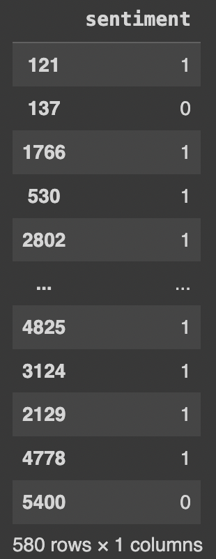

Data
Data
https://www.kaggle.com/datasets/yash612/stockmarket-sentiment-datasetdf
| Text | Sentiment |
|---|---|
| Kickers on my watchlist XIDE TIT SOQ PNK CPW BPZ AJ trade method 1 or method 2, see prev posts | 1 |
| user: AAP MOVIE. 55% return for the FEA/GEED indicator just 15 trades for the year. AWESOME. | 1 |
| user I'd be afraid to short AMZN - they are looking like a near-monopoly in eBooks and infrastructur... | 1 |
| MNTA Over 12.00 | 1 |
| AAP - user if so then the current downtrend will break. Otherwise just a short-term correction in me... | -1 |
Raw Dataframe

Label Encoded Dataframe
The label is encoded to 0 for negative sentiment and 1 for positive sentiment instead of 1 for positive sentiment and -1 for negative sentiment.
Label Distribution
Tweet Length Distribution
On average, the tweet length is 15 to 20. The maximum tweet length is 35.
Data Preparation for Sentiment Analysis Using LSTM
The tweets data is split into train, test and validation sets. The texts is then tokenized and convert into glove embeddings. It is also truncated and padded to make length of each tweet data vector same.
Glove Embeddings
GloVe, or Global Vectors for Word Representation, is an unsupervised learning algorithm for generating word embeddings. Developed by researchers at Stanford, GloVe constructs a global co-occurrence matrix from a large corpus of text and captures the statistical relationships between words. The algorithm aims to learn vector representations for words such that their dot products correspond to the logarithm of the words' probability of co-occurrence. It leverages the global context of words, emphasizing their semantic similarities based on the frequency and proximity of their appearances in the corpus. GloVe embeddings possess the ability to capture both syntactic and semantic relationships, making them valuable in natural language processing tasks like sentiment analysis, machine translation, and text classification. The resulting embeddings are pre-trained vectors that can be utilized as feature representations for words in downstream tasks, facilitating the development of more context-aware and semantically rich models in the field of natural language understanding.
X_train
X_test
X_val
y_train
y_test
y_val
Bert data preparation
The train, test and validation tweets text data is truncated, padded and tokenized using the bert tokenizer that is same as the one used by the pretrained model(Finbert).